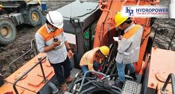
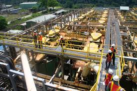
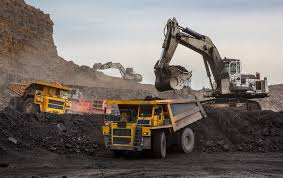
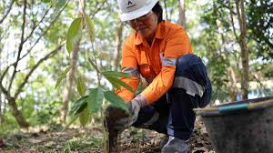
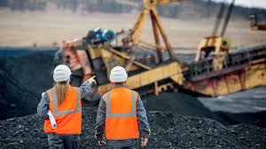

Tim geologi kami melakukan survei dan analisis untuk mengidentifikasi lokasi potensial sumber daya mineral. Menggunakan teknologi canggih seperti pemetaan satelit, geofisika, dan pengeboran eksplorasi, kami dapat menentukan kualitas dan kuantitas deposit mineral dengan akurat. Proses ini sangat penting untuk perencanaan operasi tambang yang efisien dan berkelanjutan.
Halaman Karir
Temukan Peluang Untuk Tumbuh dan Berkontribusi
Hidup & Bekerja di MINE
- Apakah Anda memulai karier Anda atau ingin melangkah ke tingkat berikutnya, karir di MINE memberdayakan Anda untuk menyesuaikan aspirasi karir Anda
- Kami mendorong orang-orang kami untuk mengeksplorasi dan menggunakan semua bakat mereka untuk mencapai potensi penuh di MINE
- Inovasi adalah darah kehidupan setiap perusahaan, kami menyambut semua ide bagus. Orang-orang kami bekerja bersama sebagai satu tim dan memberikan dampak pada bisnis.
- Kami fokus pada membangun dan memberdayakan masyarakat lokal dengan tumbuh dalam sinergi, guna menciptakan harmoni dengan komunitas
Kegiatan di Tambang

Selengkapnya
Maintenance Berkala
Melakukan perawatan alat berat sudah menjadi rutinitas yang harus dilakukan oleh pengguna alat berat. Dengan melakukan perawatan, hal tersebut bertujuan untuk menjaga performa mesin sehingga titik kenyamanan masih dapat dirasakan dengan optimal salah satunya dengan maintenance alat berat. Pada dasarnya, Maintenance adalah proses pemeliharaan atau perawatan terhadap sesuatu atau seseorang. Dalam konteks ini, maintenance dilakukan pada unit mesin alat berat. Hal ini bertujuan untuk mengurangi resiko kerusakan yang fatal akibat penggunaan secara terus-menerus.

Selengkapnya
Pengolahan Mineral
Metode pengolahan bijih di tambang Batu Hijau menggunakan proses fisika, bukan proses kimia yang melibatkan bahan berbahaya seperti arsenik atau merkuri. Proses pengolahan dimulai dengan tahap pengecilan ukuran bijih. Bijih ditumbuk menggunakan mesin yang disebut Semi Autogeneous (SAG) Mill. Selanjutnya, material digerus dengan Ball Mill hingga menjadi ukuran 250 mikron yang disebut rougher feed. Proses pengolahan mineral menggunakan teknologi canggih untuk menghasilkan produk berkualitas tinggi.

Selengkapnya
Pengangkutan Material
Penggunaan alat berat untuk mengangkut material tambang ke fasilitas pengolahan. Alat tambang manual yang sering digunakan yaitu Excavator. Fungsi utama dari alat ini yaitu untuk menggali, memuat, dan memindahkan material, seperti material tanah, batu, pasir, dan kerikil. Bahan tambang yang dimuat akan dibawa oleh truk pengangkut yaitu Dump Truk

Selengkapnya
Rehabilitasi Lahan
Komitmen kami terhadap lingkungan dengan melakukan rehabilitasi lahan pasca tambang. Pemulihan lahan bekas tambang perlu memerhatikan sejumlah hal mulai dari lokasi, jenis bahan tambang, legalitas, hingga informasi terkait lahan tersebut. Di sisi lain, penting juga mengintegrasikan konsep pemulihan lingkungan dan peningkatan kesejahteraan masyarakat.

Selengkapnya
Keselamatan dan Kesehatan Kerja
Pertambangan merupakan salah satu sektor dengan risiko tinggi bagi para pekerjanya. Oleh karena itu, penerapan Keselamatan dan Kesehatan Kerja (K3) yang ketat dan komprehensif adalah hal mutlak dalam industri ini. Petugas dan tim K3 memiliki tanggung jawab penting untuk menjaga keamanan dan kesehatan seluruh pekerja di lingkungan tambang. Prioritas utama kami adalah menjaga keselamatan dan kesehatan seluruh pekerja tambang.
Pembelajaran & Pengembangan
Investasi pada orang-orang kami adalah salah satu prioritas kami. Dengan menerapkan model 70:20:10, pembelajaran dan pengembangan Anda adalah investasi utama kami.
- Pengalaman di tempat kerja adalah salah satu cara yang efektif dan tak tergantikan untuk mengembangkan pemimpin masa depan. Kami mengembangkan orang-orang kami dari tugas yang menantang karyawan, dengan mengamati orang lain dan berpartisipasi di tempat kerja.
- Pengembangan melalui orang lain untuk mengeluarkan potensi penuh Anda, terutama dari Supervisor atau Manajer yang berfokus pada individu Anda atau kinerja.
- Pembelajaran dari kelas dan diimplementasikan pada pengalaman kerja Anda, baik itu pelatihan soft-skill atau pelatihan fungsional spesifik.